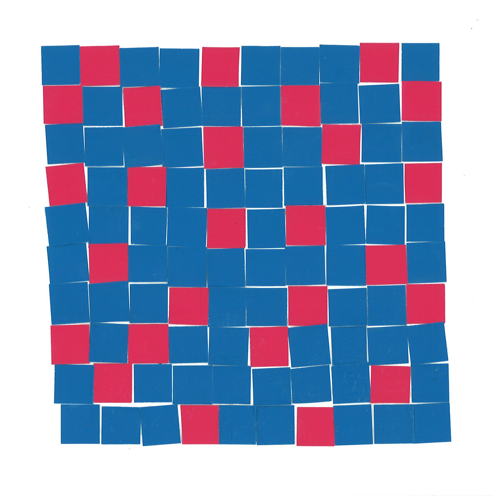

- Collage
- 26 of the 100 squares are pink and 74 are blue
- 26/100 = 26%
 - Worked on the first large-scale calculator, a precursor to modern computers
- Worked on the first large-scale calculator, a precursor to modern computers
- Coined the term “bug” to describe errors in code
- Helped to design a modified compiler
- https://www.britannica.com/biography/Grace-Hopper